Introduction
The aim of this project is to inform a strategic sampling process for the ICMP pilot study using historical data from 50 monitoring sites along the St. Clair River from 2014 to evaluate how informative each of the sites is through a Bayesian entropy-based framework following Le and Zidek (2006) and Ainslie et al. (2009).
Methods
Data
We used sediments data from the Great Lakes Water Quality Agreement. The sampling campaign was conducted from 2014-06-23 to 2014-07-02, for 50 sites along St Clair River with sites on both sides of the border (US and Canada). Collected samples included 319 substances labeled as chemicals of concern under the GLWQA and ICMP. The different substances were grouped into different types such as esters, fungicides, herbicides, insecticides, major ions, metals, physical variables, etc. Given the large number of variables in the dataset we decided to analyze O,P’-DDE (2,4’-DDE) using the other substance types as predictors, as they were sampled at the same time and at the same locations.
Figure 1: Location of the sampling sites across St. Claire River.
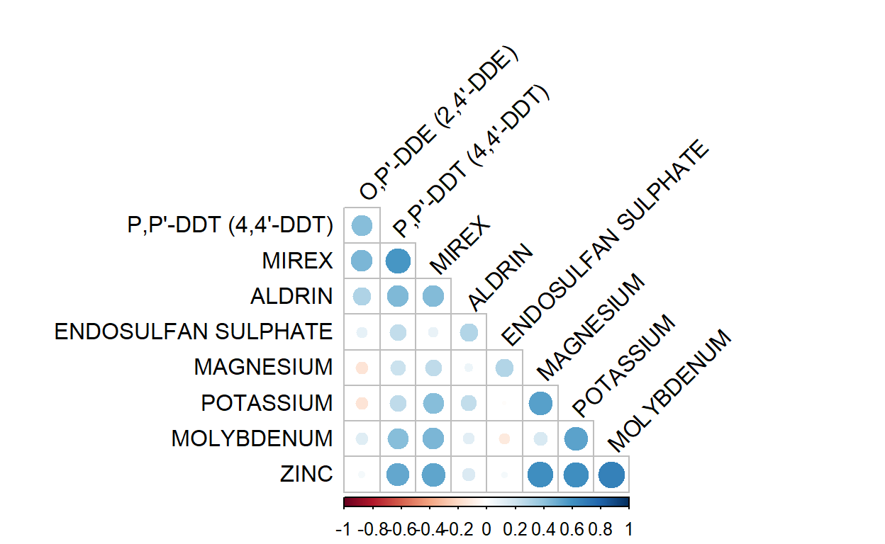
Figure 2: Correlation among modelled variables, including insecticides (red), pesticides (purple), major ions (green), and metals (beige).
Statistical approach
We modeled the concentration of O,P’-DDE in the natural logarithmic scale such that: \[Y(s)=X(s)β+Z(s)+ϵ(s)\]
where X(s) is a q-dimensional vector containing the twelve predictors as previously described, \(β\) is a vector of coefficients associated with those variables, \(ϵ(s)\) represents the measurement error and follows a normal distribution with zero mean and variance \(τ^2\) (nugget effect). The latent spatial effect Z follows a zero mean Gaussian process with an exponential spatial covariance structure given by \(σ^2\) R where R is a valid correlation matrix with elements \(R_{ij}=exp(-d_{ij})\), where \(σ^2\) is the spatial variance,\(d_{ij}\) is the distance between observation i and j, and \(ϕ\) is the range parameter.
The model in nimble is defined as follows:
dde_model <- nimbleCode({
for (i in 1:n_obs) {
mean_y[i] <- betas[1] +
betas[2] * coords[i, 1] +
betas[3] * coords[i, 2] +
betas[4] * border_dummy[i] +
betas[5] * major_ions[i, 1] +
betas[6] * major_ions[i, 2] +
betas[7] * metals[i, 1] +
betas[8] * metals[i, 2] +
betas[9] * insects[i, 1] +
betas[10] * insects[i, 2] +
betas[11] * insects[i, 3] +
betas[12] * insects[i, 4]
}
Sigma_y[1:n_obs, 1:n_obs] <-
sigma2 * exp(-dist_matrix[1:n_obs, 1:n_obs] / phi) + tau2 * diag(n_obs)
y_log[1:n_obs] ~ dmnorm(mean = mean_y[1:n_obs], cov = Sigma_y[1:n_obs, 1:n_obs])
y_fitted[1:n_obs] ~ dmnorm(mean = mean_y[1:n_obs], cov = Sigma_y[1:n_obs, 1:n_obs])
y_fitted_exp[1:n_obs] <- exp(y_fitted[1:n_obs])
# Prior definition
phi ~ dexp(rate = 1 / phi_mean)
for (i in 1:n_var) {
betas[i] ~ dnorm(mean = 0, sd = 10)
}
tau ~ T(dt(mu = 0, tau = 0.1, df = 1), 0,)
tau2 <- pow(tau, 2)
rho2 ~ dgamma(shape = 2, scale = 1)
sigma2 <- tau2 / rho2
})Results
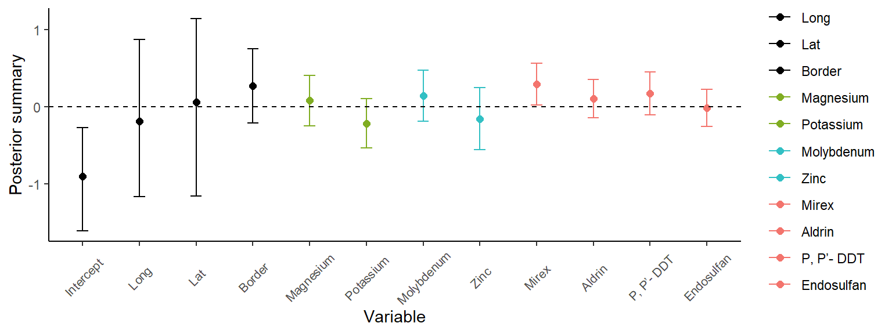
Figure 3: Posterior summary for the fixed-effect coefficients.
Entropy based monitoring design
The following function extracts the distance matrix used in the model presented in the previous section and presents the function to calculate the network’s entropy.
set.seed(123)
distance_matrix <- pre_processed_data$data$dist_matrix
# Function to compute the entropy
# In this case we are going to rate the sites based on their entropy
H_g <- function(dist_mat, mcmc_summ) {
# @input dist_mat: distance matrix of tentative sites to add
# @input mcmc_summ: summary of the mcmc chains, we are interested in the posterior means
# @return Entropy: calculated entropy for the given distance matrix
phi_mcmc <- mcmc_summ["phi", "mean"]
sigma_mcmc <- mcmc_summ["sigma2", "mean"]
tau_mcmc <- mcmc_summ["tau2", "mean"]
Sigma_sim <-
sigma_mcmc * exp(-dist_mat / phi_mcmc) + tau_mcmc * diag(nrow(dist_mat))
Entropy <- (1/2)*log(det(Sigma_sim))
return(Entropy)
}We first used the entropy-based approach to rank sites in order of importance. First, we removed one site at a time and calculated the entropy of the resulting network. Sites whose removal would result in higher entropy, would be ranked as the least important, while sites whose removal would produce minimum entropy would be categorized as the most important.
# Here, we show the indices to choose from
indices_to_choose <- c(1:nrow(distance_matrix))
# Then we remove one site at a time and get the corresponding list of indexes
# of sites that would remain in the network
combination_list <- combn(indices_to_choose, length(indices_to_choose)-1)
combination_list_rev <- combination_list[,ncol(combination_list):1]
H_sites_dde <- c() # Vector of entropies
# Iterate through all possible combination of sites
for (j in 1:ncol(combination_list)){
# Compute the entropy for the tentative combination of sites
H_sites_dde[j] <- H_g(distance_matrix[combination_list_rev[,j], combination_list_rev[,j]], summary_mcmc)
}
# Order entropy
rank_dde <- order(H_sites_dde, decreasing = TRUE)
# Technically this is the ranking of the sites, the first ones are the ones with
# maximum entropy. So when site 13 is removed, we get the maximum entropy, when
# we remove site 1, We get the minimum entropy, so site 1 is more important
# than site 13
rank_dde [1] 13 19 18 7 22 21 11 16 14 10 23 8 24 9 25 12 34 20 44 27 46 6
[23] 2 37 5 15 29 26 4 41 17 3 36 28 33 42 43 40 45 30 47 35 31 39
[45] 32 38 1Ranking Results
Figure 4: Site importance ranking based on the entropy-based leave-one-out approach. Colors indicate relative importance, with lower entropy (darker colors) representing more critical sites.
Removing multiple sites
Now, let’s say we want to reduce the network by five sites. The following code will calculate the entropy of all possible combinations after removing five sites at a time.
# Here, we show the indices to choose from
indices_to_choose_delete <- c(1:nrow(distance_matrix))
# Then we remove five sites at a time and get the corresponding list of indexes
# of sites that would remain in the network
combination_list <- combn(indices_to_choose, length(indices_to_choose)-5)
combination_list_rev <- combination_list[,ncol(combination_list):1]H_five_sites_delete_dde <- c()
# Iterate through all possible combination of sites
for (j in 1:ncol(combination_list)){
# Compute the entropy for the tentative combination of sites
H_five_sites_delete_dde[j] <- H_g(distance_matrix[combination_list_rev[,j], combination_list_rev[,j]], summary_mcmc)
}
# Save output to avoid running it every time we run the book
saveRDS(H_five_sites_delete_dde, "output/H_five_sites_delete_dde.rds")# Order entropy
H_five_sites_delete_dde <- readRDS("output/H_five_sites_delete_dde.rds")
rank_five_dde <- order(H_five_sites_delete_dde, decreasing = TRUE)
# In this case, if we remove the first five sites that yield to the max entropy
# the resulting network would be to use sites:
chosen_sites_delete <- combination_list_rev[,rank_five_dde[1]]
# Start new network
new_sites_dde <- substances_spread[, c("SITE_NO", "LONGITUDE", "LATITUDE")]
# Colored by site type: Keep, Remove, Add
new_sites_dde[,'Number'] <- 1:nrow(distance_matrix)
new_sites_dde[chosen_sites_delete,'Type'] <- 'Keep'
new_sites_dde[indices_to_choose_delete %notin% chosen_sites_delete,'Type'] <- 'Remove'And if we wanted to move those sites or add new sites to the monitoring network then we would do the following
# From the original distance matrix, remove sites labeled as Remove
reduced_network <- new_sites_dde |> filter(Type == 'Keep')
reduced_coords <- munge_coordinates(reduced_network)$substance_df |>
dplyr::select(X_km, Y_km)
# Load tentative sites
tentative_sites <- read.csv('data/tentative_1k_points.csv')
tentative_coords <- munge_coordinates(tentative_sites)$substance_df |>
dplyr::select(X_km, Y_km)
# All combinations of 5 sites
indices_to_choose_add <- c(1:nrow(tentative_coords))
# Then we remove five sites at a time and get the corresponding list of indexes
# of sites that would remain in the network
tentative_list <- combn(indices_to_choose, 5)
tentative_list_rev <- tentative_list[,ncol(tentative_list):1]# Calculate the entropy
H_five_sites_add_dde <- c() # Vector of entropies
# Iterate through all possible combination of sites
for (j in 1:ncol(tentative_list_rev)){
# Calculate the distance matrix adding those sites
tentative_matrix <- rbind(reduced_coords,tentative_coords[tentative_list_rev[,j],])
dist_matrix_add <- dist(tentative_matrix) |> as.matrix()
# Compute the entropy for the tentative combination of sites
H_five_sites_add_dde[j] <- H_g(dist_matrix_add, summary_mcmc)
}
saveRDS(H_five_sites_add_dde, 'output/H_five_sites_add_dde.rds')H_five_sites_add_dde <- readRDS('output/H_five_sites_add_dde.rds')
# Order entropy
rank_five_dde_add <- order(H_five_sites_add_dde, decreasing = TRUE)
# In this case, if we remove the first five sites that yield to the max entropy
# the resulting network would be to use sites:
chosen_sites_add <- tentative_list_rev[,rank_five_dde_add[1]]
# In this case, it would mean to add sites: 6, 15, 17, 18, and 29
sites_add <- tentative_sites[chosen_sites_add,c( "LONGITUDE", "LATITUDE")]
sites_add$SITE_NO <- c('ON06', 'ON15', 'ON17', 'ON18', 'ON29')
sites_add$Type <- 'Add'
sites_add$Number <- 0The following map shows how the resulting network would look like after we remove those sites
Figure 5: Network configuration after site removal and addition. Original sites retained are shown in one color, removed sites in another, and newly added sites highlighted.
Supplementary Material
Finally, these are the figures in the supplementary material of the original article.
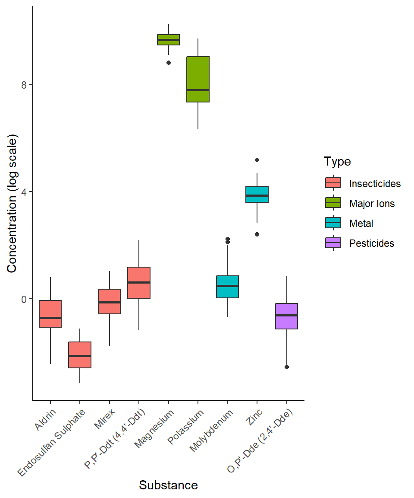
Figure 6: Summary of modelled substances. a) Concentration of insecticides, pesticides, major ions and metals (log scale, boxplots).
Figure 7: O,P’-DDE (2,4’-DDE) concentration in NG/G DWT across some locations close to St Claire River.
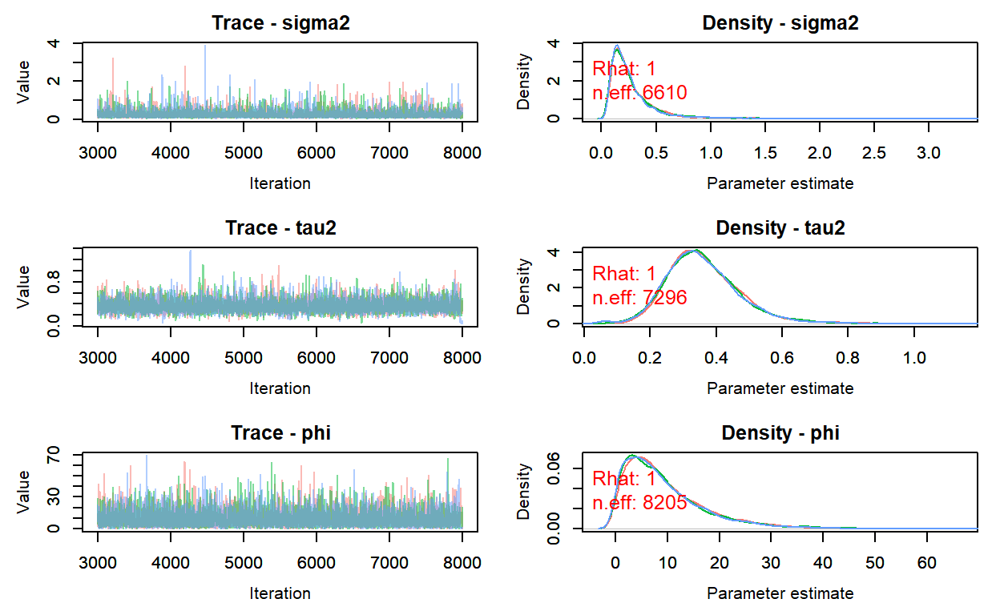
Figure 8: Trace plots for key parameters of the geostatistical model, including spatial variance (σ²), nugget variance (τ²), spatial range (ϕ), and the first three regression coefficients (β₁–β12).
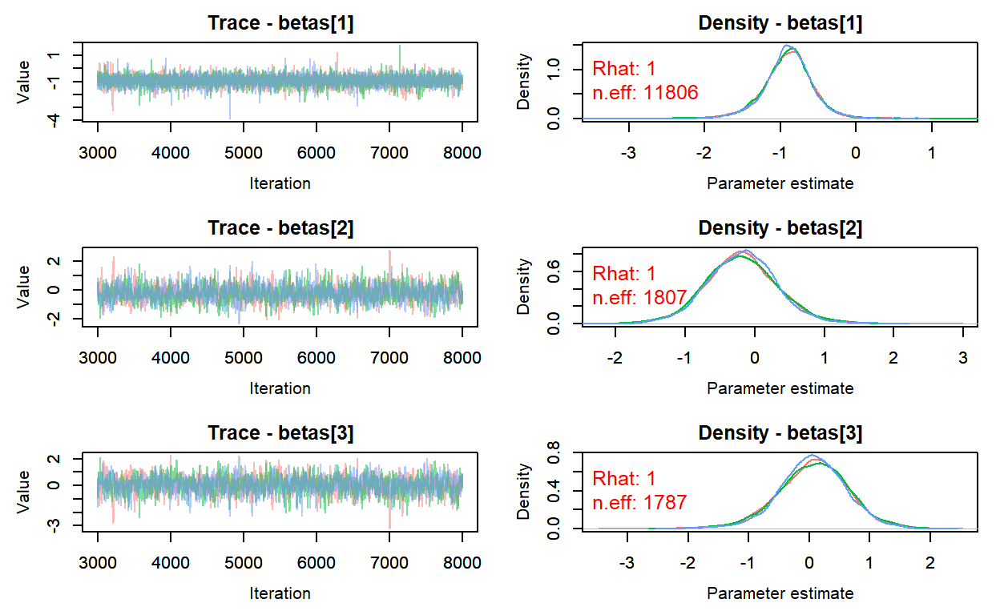
Figure 9: Trace plots for key parameters of the geostatistical model, including spatial variance (σ²), nugget variance (τ²), spatial range (ϕ), and the first three regression coefficients (β₁–β12).
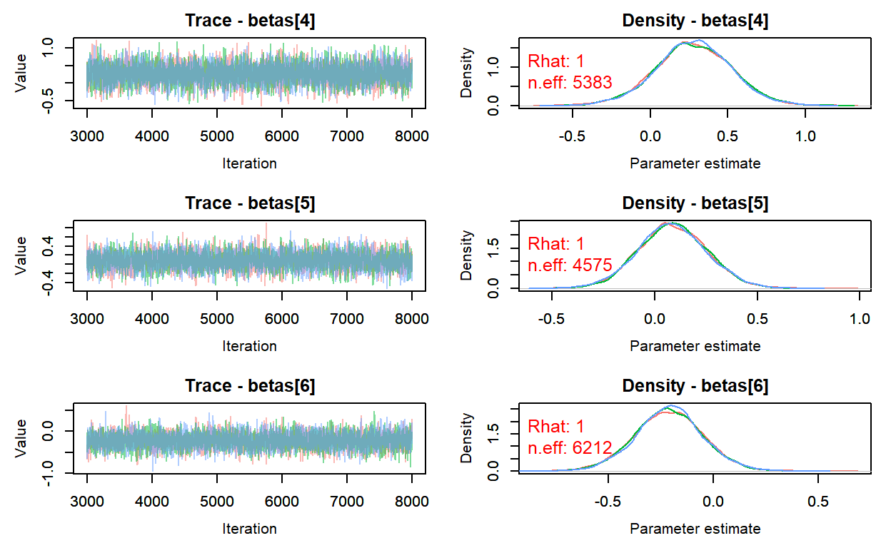
Figure 10: Trace plots for key parameters of the geostatistical model, including spatial variance (σ²), nugget variance (τ²), spatial range (ϕ), and the first three regression coefficients (β₁–β12).
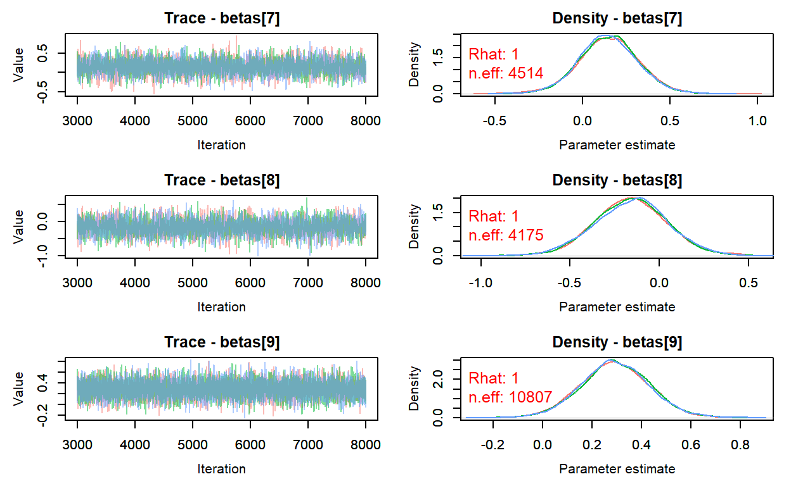
Figure 11: Trace plots for key parameters of the geostatistical model, including spatial variance (σ²), nugget variance (τ²), spatial range (ϕ), and the first three regression coefficients (β₁–β12).
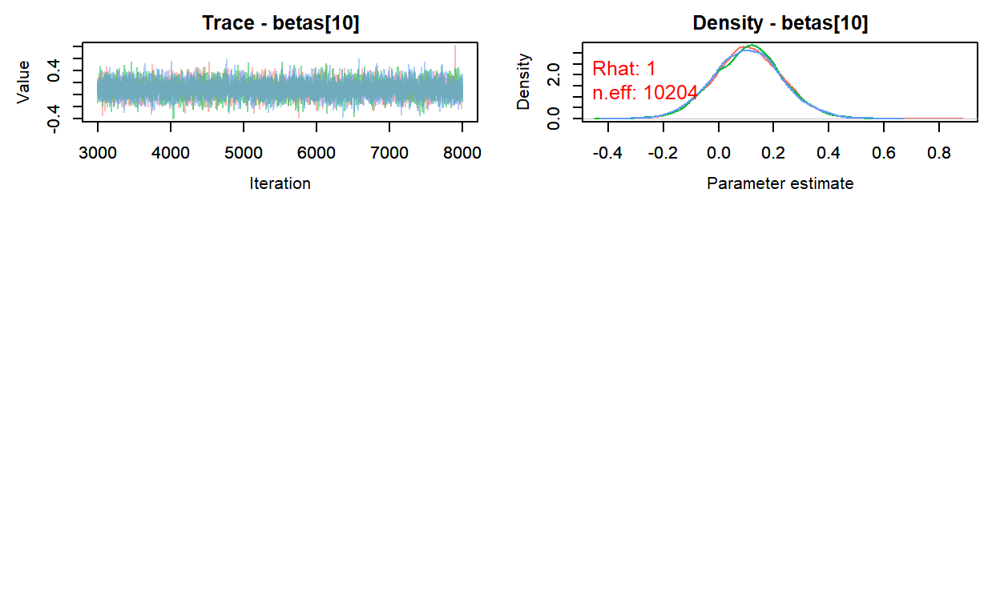
Figure 12: Trace plots for key parameters of the geostatistical model, including spatial variance (σ²), nugget variance (τ²), spatial range (ϕ), and the first three regression coefficients (β₁–β12).

Figure 13: Observed versus fitted log-transformed DDE concentrations at each of the 47 sampling sites. Black solid circles represent the posterior mean of the fitted values from the geostatistical model, red solid circles represent the observed values, and vertical bars indicate 95% posterior credible intervals. This visualization assesses how well the model captures site-level spatial and environmental variation.
Figure 14: Posterior mean (b) and standard deviation (c) for the p,p’-DDE concentrations (NG/G DWT) across observed sites based on the Bayesian spatial model, with point color and size proportional to predicted values
Figure 14: Posterior mean (b) and standard deviation (c) for the p,p’-DDE concentrations (NG/G DWT) across observed sites based on the Bayesian spatial model, with point color and size proportional to predicted values
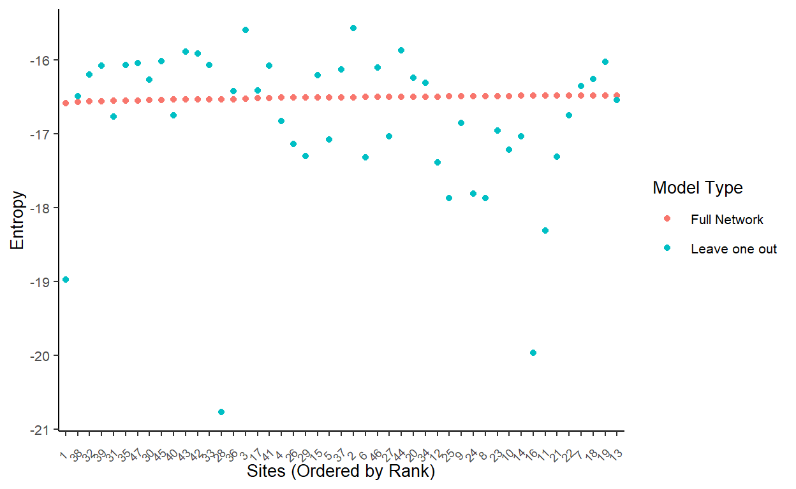
Figure 15: Entropy comparison using the full network as baseline vs recalculating the parameters after dropping one site at a time.
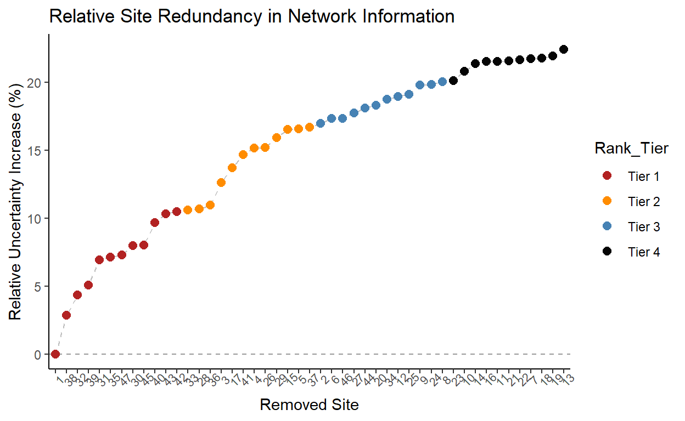
Figure 16: Information loss calculated as Hfull – H-j with sites ordered by importance, i.e. sites 1 and 38 would cause the highest loss of information if dropped.
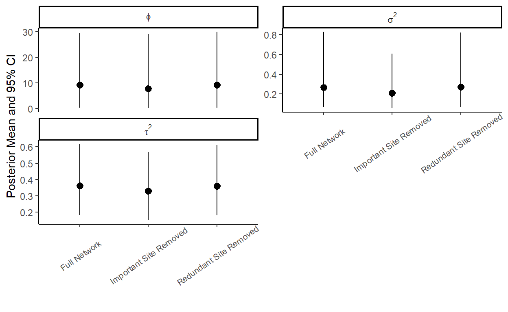
Figure 17: Posterior mean (solid circles) and 95% Credible Intervals (CI) for the spatial decay parameter (ϕ), spatial variance (σ^2) and nugget effect (τ^2) across different network scenarios. This plot evaluates the robustness of the model by comparing the full network against models with high-influence and redundant sites removed.
Figure 18: Sites colored by order of importance based on the entropy-based approach for site ranking. Sites on the red color of the spectrum mean highly informative sites while sites toward the blue color are less informative.
References
Ainslie, B., Reuten, C., Steyn, D. G., Le, N. D., & Zidek, J. V. (2009). Application of an entropy-based Bayesian optimization technique to the redesign of an existing monitoring network for single air pollutants. Journal of Environmental Monitoring, 11(5), 1037–1043. https://doi.org/10.1039/b900658b
Le, N. D., & Zidek, J. V. (2006). Statistical Analysis of Environmental Space–Time Processes. Springer Series in Statistics. Springer. https://doi.org/10.1007/0-387-30160-0